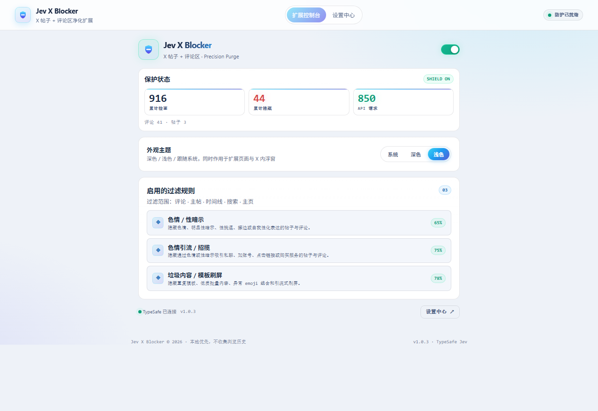
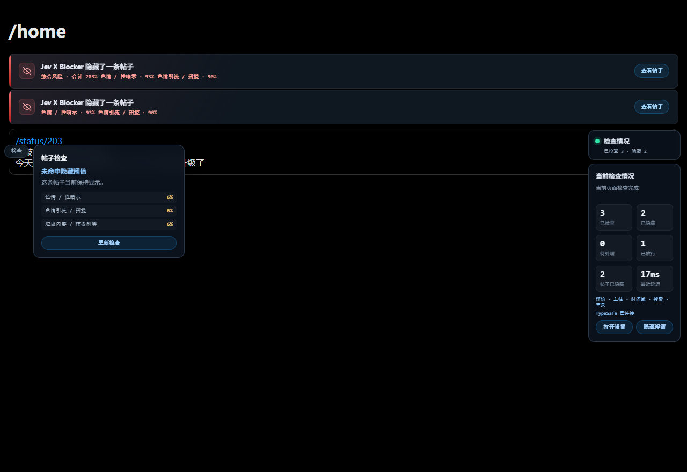
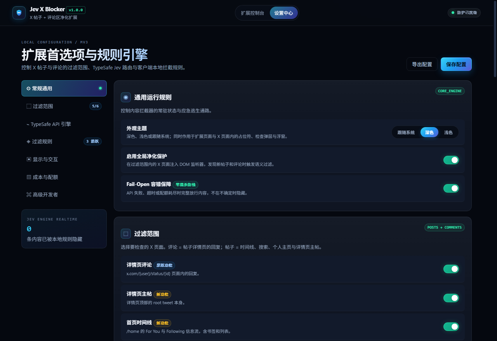

把噪声留在视线之外。
用判断模型语义过滤 X 上的垃圾信息与噪声骚扰——不是关键词匹配，更准确、更智能；规则用大白话定义，速度快到几乎无感。色情、引流、刷屏只是第一批内置规则，任何你想过滤的垃圾都可以一句话自定义，命中内容一键恢复。



功能
不只是屏蔽——是让 X 回归你想要的样子。
帖子 + 评论双通道
详情页评论、详情页主帖、首页时间线（含书签/列表）、搜索结果、个人主页、探索页——六个范围独立开关，默认开启详情页评论与首页时间线，其余一键可开。
视口懒检查
时间线帖子只在滚动到视口附近时才请求分类，快速划过的帖子零 API 成本；重复内容命中本地 LRU 缓存（默认 24h）。
Fail-Open 容错
API 失败、超时、达到每日配额时完整放行——不在不确定时隐藏任何内容。
本地优先
API Key 只存浏览器本地、仅由 service worker 读取；不申请 tabs / history / cookies / webRequest 权限。
规则完全可定制
内置色情/性暗示、引流/招揽、模板刷屏三条规则只是第一批；阈值可调（0.5–0.99），支持自定义自然语言规则并可限定"仅评论 / 仅帖子"——任何你想过滤的垃圾，一句话就是一条规则。
深色 / 浅色 / 跟随系统
主题设置同步作用于扩展页面与 X 内的占位符、检查弹层、浮动窗；版本号与设置实时可见。
安装
四步完成，无需编译。
下载 Jev-X-Blocker-v1.1.1.zip（约 76 KB），解压得到一个 Jev-X-Blocker 文件夹。
Chrome 地址栏输入 chrome://extensions，Edge 输入 edge://extensions，打开右上角的"开发者模式"。
点"加载已解压的扩展程序"，选择解压出的 Jev-X-Blocker 文件夹（manifest.json 就在根部）。
首次安装自动打开引导页，填入你的 TypeSafe API Key 并测试连接。没有 Key 时插件保持放行，不会隐藏任何内容。
隐私边界
你的数据属于你。以下是完整的隐私承诺。